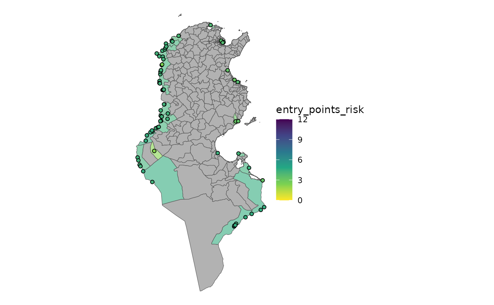

Calculate entry point risk
calc_entry_point_risk.RdCalculating the entry point risk associated with each epidemiological unit.
Firstly, an aggregated (points_agg_fun) emission risk is calculated for each entry point. This is
because an entry point can have multiple sources (countries) giving emission
risk.
Then, each entry point is allocated to an epidemiological unit. This is done by geospatial means, if an entry point is located inside an epidemiological unit's area it is thus allocated to it. Entry points not located inside any epidemiological unit are allocated to the nearest one.
Finally, now that each entry point has an emission risk and has been paired
with an epidemiological unit, the aggregated (eu_agg_fun) risk score for each epidemiological
unit is calculated. Giving the final risk of introduction by entry points for
each epidemiological unit.
Usage
calc_entry_point_risk(
entry_points,
epi_units,
emission_risk,
points_agg_fun = mean,
eu_agg_fun = max
)Arguments
- entry_points
The entry points dataset as formatted and validated by
apply_mapping()andmapping_entry_points(). This should be ansfobject containing points and emission risks.- epi_units
The epidemiological units dataset as formatted and validated by
apply_mapping()andmapping_epi_units(). This should be ansfobject with polygons.- emission_risk
The emission risk dataset as returned by the
calc_emission_risk()function.- points_agg_fun
Function used to aggrgate emission risk for each entry point. See description above. Default is
mean().- eu_agg_fun
Function used to aggregate emission risk scores for each epidemiological unit. Default is
max().
Value
an sf dataset containing the following columns:
eu_id: epidemiological units id (fromepi_unitsdataset)eu_name: epidemiological units name (fromepi_unitsdataset)entry_points_risk: weighted entry point risk scorerisk_sources: informative HTML labels to be used in Leaflet plots
This dataset also has a number of attributes that are used in other
functions from riskintroanalysis to make passing dataset metadata between
functions more user-friendly.
points: is ansfdataset containing the aggregated emission risk score for each point. It can be easily accessed withextract_point_risk()and has the following columns:point_id: unique identifier for entry pointspoint_name: names of entry pointsmode: legality or illegality of the entry pointtype: transport type of the entry pointsource: string of concatenated source countries of entry pointpoints_label: HTML label for use in leaflet tooltipsAlso attributes:
risk_col = "point_emission_risk"andrisk_scale = c(0,12)
risk_col = "entry_points_risk"used byplot_risk()table_name = "entry_points"used byplot_risk()scale = c(0, 12)used byplot_risk()andrescale_risk_scores()
Examples
library(riskintroanalysis)
library(dplyr)
entry_points_fp <-
system.file(
package = "riskintrodata",
"samples",
"tunisia",
"entry_points", "BORDER_CROSSING_POINTS.csv"
)
entry_points <- readr::read_csv(entry_points_fp)
#> Rows: 110 Columns: 6
#> ── Column specification ────────────────────────────────────────────────────────
#> Delimiter: ","
#> chr (4): NAME, TYPE, MODE, SOURCES
#> dbl (2): LONGITUDE_X, LATITUDE_Y
#>
#> ℹ Use `spec()` to retrieve the full column specification for this data.
#> ℹ Specify the column types or set `show_col_types = FALSE` to quiet this message.
entry_points <- apply_mapping(
dataset = entry_points,
mapping = mapping_entry_points(
point_name = "NAME",
lng = "LONGITUDE_X",
lat = "LATITUDE_Y",
mode = "MODE",
type = "TYPE",
sources = "SOURCES"
),
validate = TRUE
)
#> ✔ All data in "entry_points" valided.
tunisia_raw <- sf::read_sf(system.file(
package = "riskintrodata",
"samples", "tunisia", "epi_units", "tunisia_adm2_raw.gpkg"
))
# Apply mapping to prepare colnames and validate dataset
tunisia <- apply_mapping(
tunisia_raw,
mapping = mapping_epi_units(
eu_name = "NAME_2",
geometry = "geom"
),
validate = TRUE
)
#> ✔ All data in "epi_units" valided.
algeria <- riskintrodata::erf_row(
iso3 = "DZA",
country = "Algeria",
disease = "Avian infectious laryngotracheitis",
animal_category = "Domestic",
species = "Birds",
disease_notification = 0,
targeted_surveillance = 1,
general_surveillance = 0,
screening = 1,
precautions_at_the_borders = 1,
slaughter = 1,
selective_killing_and_disposal = 1,
zoning = 1,
official_vaccination = 1,
last_outbreak_end_date = as.Date("30/06/2023"),
commerce_illegal = 0L,
commerce_legal = 0L
)
#> ✔ All data in "emission_risk_factors" valided.
libya <- riskintrodata::erf_row(
iso3 = "LBY",
country = "Libya",
disease = "Avian infectious laryngotracheitis",
animal_category = "Domestic",
species = "Birds",
disease_notification = TRUE,
targeted_surveillance = 1,
general_surveillance = 0,
screening = 1,
precautions_at_the_borders = 0,
slaughter = 1,
selective_killing_and_disposal = 1,
zoning = 1,
official_vaccination = 1,
last_outbreak_end_date = as.Date("30/06/2019"),
commerce_illegal = 0L,
commerce_legal = 1
)
#> ✔ All data in "emission_risk_factors" valided.
wahis_erf <- riskintrodata::get_wahis_erf(
disease = "Avian infectious laryngotracheitis",
animal_category = "Domestic",
species = "Birds"
)
#> ✔ All data in "emission_risk_factors" valided.
#> ✔ WAHIS emission risk factors dataset has 62 entries for `disease = Avian infectious laryngotracheitis`, `species = Birds`, and `animal_category = Domestic`.
emission_risk_factors <- dplyr::bind_rows(
algeria,
libya,
wahis_erf
)
emission_risk_table <- calc_emission_risk(emission_risk_factors = emission_risk_factors)
ri_entry_points <- calc_entry_point_risk(
entry_points = entry_points,
epi_units = tunisia,
emission_risk = emission_risk_table
)
#> Warning: ! There are missing emission risk scores for the following countries:
#> • BIH missing for 1 entry points.
#> • BRN missing for 1 entry points.
#> • ESP missing for 1 entry points.
#> • FRA missing for 1 entry points.
#> • HUN missing for 2 entry points.
#> • ISR missing for 1 entry points.
#> • MAR missing for 1 entry points.
#> • NOR missing for 1 entry points.
#> • PAN missing for 1 entry points.
#> • PER missing for 1 entry points.
#> • PHL missing for 1 entry points.
#> • VNM missing for 1 entry points.
#> • ZAF missing for 1 entry points.
#> Create new entries in the emission risk factor table using `erf_row()`
#> (`?riskintrodata::erf_row()`).
plot_risk(ri_entry_points)

extract_point_risk(ri_entry_points)
#> Simple feature collection with 71 features and 6 fields
#> Geometry type: POINT
#> Dimension: XY
#> Bounding box: xmin: 7.572541 ymin: 31.94455 xmax: 11.59319 ymax: 37.26487
#> Geodetic CRS: WGS 84
#> # A tibble: 71 × 7
#> point_id point_name point_emission_risk mode type points_label
#> <chr> <chr> <dbl> <chr> <chr> <list>
#> 1 ep-00001 aeroport Djerba 4.17 C AIR <html [1]>
#> 2 ep-00002 aeroport enfidha 3.31 C AIR <html [1]>
#> 3 ep-00003 aeroport monastir 3.75 C AIR <html [1]>
#> 4 ep-00004 aeroport sfax 3.17 C AIR <html [1]>
#> 5 ep-00005 aeroport tabarka 4 C AIR <html [1]>
#> 6 ep-00006 Aeroport tozeur 2.25 C AIR <html [1]>
#> 7 ep-00007 aeroport tunis cathage 3.58 C AIR <html [1]>
#> 8 ep-00008 bouchebka 4.25 C BC <html [1]>
#> 9 ep-00009 dhehiba 4.25 C BC <html [1]>
#> 10 ep-00010 haidra 4.25 C BC <html [1]>
#> # ℹ 61 more rows
#> # ℹ 1 more variable: geometry <POINT [°]>
attributes(ri_entry_points)
#> $names
#> [1] "eu_id" "eu_name"
#> [3] "entry_points_risk" "geometry"
#> [5] "entry_points_risk_label"
#>
#> $row.names
#> [1] 1 2 3 4 5 6 7 8 9 10 11 12 13 14 15 16 17 18
#> [19] 19 20 21 22 23 24 25 26 27 28 29 30 31 32 33 34 35 36
#> [37] 37 38 39 40 41 42 43 44 45 46 47 48 49 50 51 52 53 54
#> [55] 55 56 57 58 59 60 61 62 63 64 65 66 67 68 69 70 71 72
#> [73] 73 74 75 76 77 78 79 80 81 82 83 84 85 86 87 88 89 90
#> [91] 91 92 93 94 95 96 97 98 99 100 101 102 103 104 105 106 107 108
#> [109] 109 110 111 112 113 114 115 116 117 118 119 120 121 122 123 124 125 126
#> [127] 127 128 129 130 131 132 133 134 135 136 137 138 139 140 141 142 143 144
#> [145] 145 146 147 148 149 150 151 152 153 154 155 156 157 158 159 160 161 162
#> [163] 163 164 165 166 167 168 169 170 171 172 173 174 175 176 177 178 179 180
#> [181] 181 182 183 184 185 186 187 188 189 190 191 192 193 194 195 196 197 198
#> [199] 199 200 201 202 203 204 205 206 207 208 209 210 211 212 213 214 215 216
#> [217] 217 218 219 220 221 222 223 224 225 226 227 228 229 230 231 232 233 234
#> [235] 235 236 237 238 239 240 241 242 243 244 245 246 247 248 249 250 251 252
#> [253] 253 254 255 256 257 258 259 260 261 262 263 264 265 266 267 268
#>
#> $class
#> [1] "sf" "tbl_df" "tbl" "data.frame"
#>
#> $sf_column
#> [1] "geometry"
#>
#> $agr
#> eu_id eu_name entry_points_risk
#> <NA> <NA> <NA>
#> entry_points_risk_label
#> <NA>
#> Levels: constant aggregate identity
#>
#> $points
#> Simple feature collection with 71 features and 6 fields
#> Geometry type: POINT
#> Dimension: XY
#> Bounding box: xmin: 7.572541 ymin: 31.94455 xmax: 11.59319 ymax: 37.26487
#> Geodetic CRS: WGS 84
#> # A tibble: 71 × 7
#> point_id point_name point_emission_risk mode type points_label
#> <chr> <chr> <dbl> <chr> <chr> <list>
#> 1 ep-00001 aeroport Djerba 4.17 C AIR <html [1]>
#> 2 ep-00002 aeroport enfidha 3.31 C AIR <html [1]>
#> 3 ep-00003 aeroport monastir 3.75 C AIR <html [1]>
#> 4 ep-00004 aeroport sfax 3.17 C AIR <html [1]>
#> 5 ep-00005 aeroport tabarka 4 C AIR <html [1]>
#> 6 ep-00006 Aeroport tozeur 2.25 C AIR <html [1]>
#> 7 ep-00007 aeroport tunis cathage 3.58 C AIR <html [1]>
#> 8 ep-00008 bouchebka 4.25 C BC <html [1]>
#> 9 ep-00009 dhehiba 4.25 C BC <html [1]>
#> 10 ep-00010 haidra 4.25 C BC <html [1]>
#> # ℹ 61 more rows
#> # ℹ 1 more variable: geometry <POINT [°]>
#>
#> $risk_col
#> [1] "entry_points_risk"
#>
#> $table_name
#> [1] "entry_points"
#>
#> $scale
#> [1] 0 12
#>